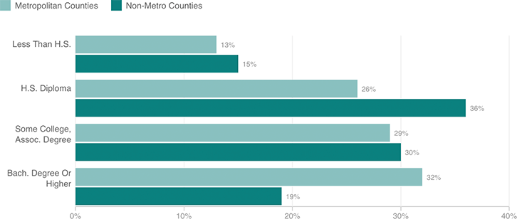

Urban Areas Are More Educated Than Rural Areas
A plurality of rural Americans — more than one-third — have a high school diploma as their highest level of educational attainment. For city-dwellers, a plurality have a college degree or higher.
